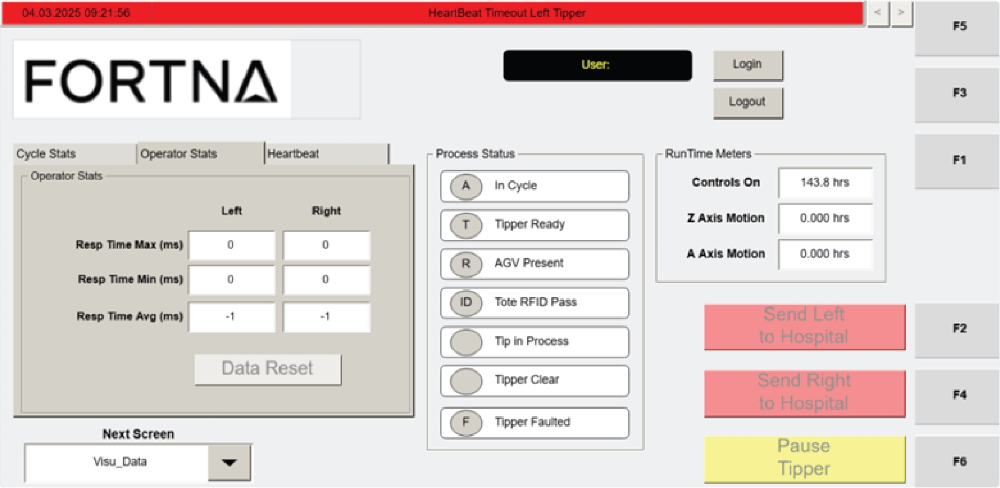

| Procedure ID | proc_reset_operator_stats_data_to_zero_visu_data_v1 |
|---|---|
| Title | Reset Operator Stats Data to Zero on the VISU_DATA Screen |
| Procedure Type | operation |
| Primary Role | operator |
| Support Safe | Yes |
| Capability Tags | device_roster_state |
| Access Surface | tipper_hmi |
| Audience Roles | operator |
| Failure Pattern Tags | None |
| Validation Status | needs_sme_review |
| Merge Status | source_finalized |
Use the DATA RESET button in the Operator Stats section on the Operator Station HMI VISU_DATA screen to clear the operator response-time metrics (left and right) back to zero.
When the Operator Stats response-time metrics on the VISU_DATA screen need to be cleared (reset) to zero using the Operator Stats section DATA RESET button.

Responsible role: operator
Instruction:
On the Operator Station HMI, navigate to the VISU_DATA screen (Operator Station HMI Data Screen).
Expected result:
The VISU_DATA screen is displayed and the Operator Stats section is visible.
Responsible role: operator
Instruction:
Locate the Operator Stats section on the VISU_DATA screen and find the DATA RESET button within that section.
Expected result:
The Operator Stats section is located and the DATA RESET button is visible.
Responsible role: operator
Instruction:
Press the DATA RESET button in the Operator Stats section.
Expected result:
The Operator Stats response-time metrics reset to zero on the VISU_DATA screen.
Stop or Escalate If:
Responsible role: operator
Instruction:
Verify that the Operator Stats response-time fields show reset-to-zero values for both left and right tippers: Resp Time Max (ms), Resp Time Min (ms), and Resp Time Avg (ms).
Expected result:
Resp Time Max (ms), Resp Time Min (ms), and Resp Time Avg (ms) for both left and right tippers display zero values as shown on the VISU_DATA screen.
Stop or Escalate If: